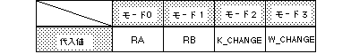

Return to previous page | Return to menu | Go to next page
void
Scroll function
Rotation parameter mode setting
void slRparaMode(mode)
Uint16 mode ;
mode Rotation parameter mode
Specify the rotation parameter mode.
You can specify how to use rotation parameters A and B.
None
The rotation parameter mode can be one of the following values: RA: Use only rotation parameter A RB: Use only rotation parameter B K_CHANGE: Image switching based on coefficient data of rotation parameter A W_CHANGE: Image switching in the rotation parameter window

Note) The values in the above table are defined in “sl_def.h” included with the system.
Reference: Chapter 8 Scroll
slRparaMode